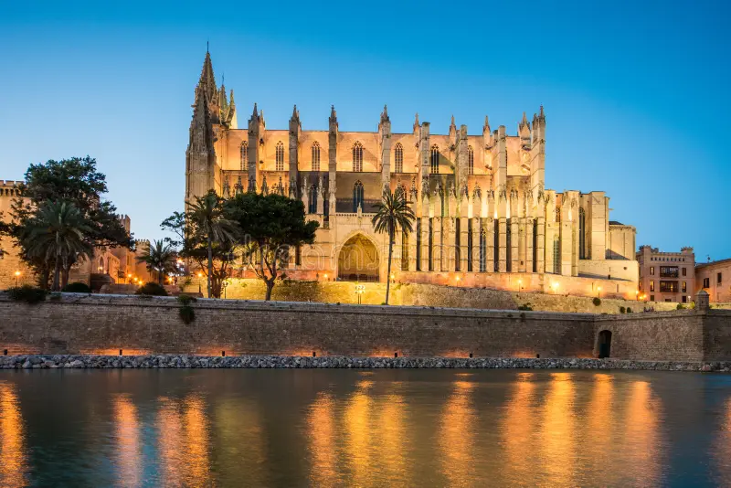

La Catedral de Santa María de Palma, conocida popularmente como La Seu, es el monumento
emblemático de Mallorca y uno de los templos góticos más espectaculares del mundo. Situada
a orillas de la bahía de Palma sobre las antiguas murallas romanas y medievales, domina el
horizonte marino de la ciudad ofreciendo una postal única.